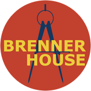
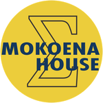

Excellence as a person
Personal dignity, respect and responsibility within the school community.
From its foundation in 1961 to generations of technically minded learners.
The school’s history reaches back to 1961. A 2010 feature in The Muse recalls an early enrolment of 130 pupils and the preparations for its golden jubilee.
The registered crest shows three gold rings, a mechanical governor and the Latin motto Docere Mentem Manumque. The school’s historical educational philosophy links personal character, scholarship and active participation.
Historical magazine feature ↗
Personal dignity, respect and responsibility within the school community.
Learning that enriches both the individual and the wider community.
Positive engagement in academic, cultural and sporting life.
Historical interpretation of the school’s traditions: Cape Town Mapping Project ↗.
Every learner is assigned to a house for sport, culture and the annual inter-house gala.


House emblems and names from the supplied screenshot of the school website ↗. Artwork reuse subject to school approval.